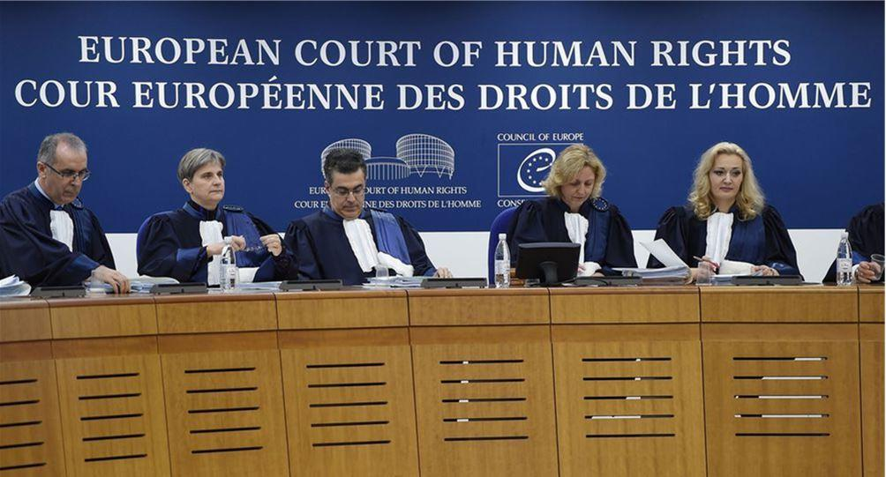

En février 2020, Grégor Puppinck, directeur de l’European Center for law and Justice, publie sur le site de cette ONG1, un rapport extrêmement bien documenté sur les liens entre les ONG en général, et le réseau Soros en particulier, et la CEDH. Ce rapport fut présenté comme explosif par le journal Le Figaro, et ce en raison de la précision des liens personnels établis entre le parcours des juges, l’implication des ONG dans la procédure d’examen des affaires et l’activisme de la Cour ces dernières années contre les valeurs traditionnelles et la religion, pour le lobby LGBT, pour les migrants ou encore pour le néoféminisme. Des journaux français ont cité ce rapport, de manière plus ou moins détaillée ; la revue Valeurs actuelles en a fait la Une (N°4343 du 20 au 26 février 2020). Grégor Puppinck a eu la gentillesse de donner l’autorisation de présenter des extraits de ce rapport aux lecteurs de la revue « Méthode ».
Plusieurs études ont déjà été consacrées à la description et à l’analyse des modes d’intervention des organisations non-gouvernementales (ONG) auprès des juridictions et des quasi-juridictions internationales2, en particulier auprès de la Cour européenne des droits de l’homme (CEDH)3. Ces études se sont concentrées sur l’analyse de l’action des ONG comme requérants, représentants ou tiers intervenants4, ainsi que sur leur contribution au suivi de l’exécution des arrêts. Elles ont révélé la variété, l’influence et l’utilité de l’action des ONG.
La présente étude entend aborder cette même question mais sous un angle complémentaire : celui des relations entretenues entre les ONG et les juges. En effet, ces relations ne se limitent pas aux voies formelles d’actions des ONG auprès de la Cour ; elles sont aussi beaucoup plus profondes et informelles puisque la Cour est composée, dans une proportion significative, d’anciens collaborateurs d’ONG.
La lecture des curriculum vitae5 des juges ayant siégé durant les dix dernières années (entre le 1er janvier 2009 et le 1er octobre 2019) permet d’identifier sept ONG étant à la fois actives à la Cour et comptant parmi leurs anciens collaborateurs au moins une personne ayant siégé comme juge permanent de la CEDH depuis 2009. Sur les cent juges permanents ayant siégé durant cette période, il apparaît que 22 ont eu des liens forts, avant leur élection comme juge, avec l’une ou plusieurs de ces sept organisations, que ce soit comme dirigeants, bénéficiaires de leurs financements ou comme participants notables et réguliers à leurs activités. En outre, en prenant également en compte des liens plus indirects, d’autres juges pourraient être ajoutés à cette liste.
Cette étude entend aller cependant plus loin, puisqu’elle vise à examiner les interactions entre ONG et juges après l’entrée en fonction de ceux-ci. L’examen des 185 affaires dans lesquelles ces sept ONG ont agi de façon visible durant ces dix dernières années a en effet permis de constater qu’à de nombreuses reprises, des juges ont siégé dans des affaires introduites ou soutenues par l’ONG avec laquelle ils avaient collaboré. Les liens entre juges et ONG sont donc plus complexes et profonds qu’il n’apparaît ordinairement. Cette étude a pour objet de mettre en lumière cette réalité significative, de s’interroger sur ses causes et de prendre la mesure des difficultés qu’elle pose.
Au-delà, le but de cette étude est de contribuer au bon fonctionnement du système européen de protection des droits de l’homme, en particulier à son indépendance, qui doit être garantie à l’égard du pouvoir non seulement des États, mais aussi de celui, non négligeable, des grandes ONG.
L’ECLJ est elle-même l’une des ONG les plus actives auprès de la Cour depuis plus de vingt ans.
I. Les liens professionnels passés entre ONG et juges
EXPOSÉ FACTUEL DES LIENS
Il a été possible d’identifier sept ONG qui, étant actives à la Cour, comptent parmi leurs anciens collaborateurs au moins une personne ayant siégé comme juge permanent de la CEDH depuis 2009. Il s’agit (par ordre alphabétique) de A.I.R.E. Centre (Centre sur les droits individuels en Europe), Amnesty International, la Commission Internationale des Juristes (CIJ), le réseau des comités et fondations Helsinki6, Human Rights Watch (HRW)7, Interights (Centre international pour la protection judiciaire des droits de l’homme), et l’Open Society Foundation (OSF) et ses diverses branches, en particulier l’Open Society Justice Initiative (OSJI).
Les collaborations entre ONG et futurs juges existent à différents degrés, allant de la fondation et direction d’ONG, à la participation significative à leurs activités8. Il n’y a pas lieu de porter un jugement sur ces engagements qui relèvent de la liberté individuelle, mais de les constater dès lors que ces ONG sont actives à la Cour. Ce tableau est probablement incomplet car documenté principalement par les informations présentées dans le cadre de la procédure de sélection des juges, et accessibles sur le site de l’Assemblée parlementaire du Conseil de l’Europe (APCE). Ce tableau ne mentionne pas les personnes ayant participé, même de façon régulière, à des réunions et conférences organisées par ces ONG, ni les adhésions personnelles à celles-ci. Enfin, certains juges ont collaboré à d’autres ONG, mais ils ne sont pas mentionnés ici car celles-ci ne sont pas actives à la Cour de Strasbourg. Cette étude ne porte pas non plus sur les juges ad hoc. Enfin, les diverses appartenances d’ordre politique, religieux ou autres sont naturellement ignorées. Les noms des intéressés ne sont mentionnés que par nécessité.
Concernant l’A.I.R.E. Centre, le juge Eicke a été membre de son Conseil d’administration de 2000 à 2008.
Concernant Amnesty International (AI), trois juges ont collaboré à divers degrés avec cette ONG. Le juge Pinto de Albuquerque a été membre du comité de direction d’Amnesty International de 2008 à 20129. Le juge Šikuta fut également en lien avec Amnesty International10. Quant au juge Felici, il a participé à la section protection des droits de l’homme d’Amnesty International de 1993 à 1995.
Concernant les Comités Helsinki, sept juges ont collaboré à divers degrés avec les branches nationales de ce réseau. Le juge Grozev a fondé le comité bulgare et la juge Kalaydjieva a été membre de celui-ci. D’autres juges ont organisé ou animé divers programmes et groupes de travail. Il s’agit des juges Garlicki, Shukking, Šikuta. Le juge Karakaş fut membre de l’Assemblée des citoyens d’Helsinki11. Le juge Yudkviska a collaboré dans une moindre mesure : elle a suivi des formations du Comité Helsinki et l’a représenté en justice.
Concernant la Commission Internationale des Juristes (CIJ), cinq juges y ont exercé des fonctions.
• La juge Motoc fut membre du conseil de la Commission jusqu’en 2013.
• La juge Schukking y fut experte en 2014 et en 2016.
• La juge Ziemele a fondé en 1995 la section lettonne de la CIJ dont elle est membre depuis.
• Le juge Cabral-Barreto a été membre du groupe « Droit et justice » de la section portugaise de la CIJ12.
• Le juge Kucsko-Stadlmayer a été membre de la CIJ Autriche depuis 2000.
Concernant Human Rights Watch, le juge Pavli a été chercheur dans cette organisation de 2001 à 2003.
Concernant Interights, le juge Eicke a été membre de son conseil d’administration de 2004 à 2015.
Concernant l’Open Society Foundation (OSF), 12 juges ont collaboré à divers degrés avec cette organisation :
• Le juge Garlicki a été membre d’un programme « individu contre État » de la Central European University depuis 1997, et a participé à plusieurs programmes d’enseignement en coopération avec l’Open Society Institute de Budapest et la Central European University de Budapest, université fondée et financée par l’OSF13.
• Le juge Grozev a été membre du Conseil d’administration de l’Open Society Institute de Bulgarie de 2001 à 2004 ainsi que de la direction centrale de l’Open Society Justice Initiative (OSJI, New York), de 2011 à 2015.
Le juge Kūris a été membre du conseil d’administration de l’Open Society Foundation de Lituanie de 1993 à 1995, membre du conseil de coordination de 1994 à 1998, expert du programme d’édition de 1999 à 2003 et membre d’un autre conseil de 1999 à 2003. Il y fut donc actif de 1993 à 2003.
La juge Laffranque a été membre entre 2000 et 2004 du conseil exécutif du Centre d’études politiques – PRAXIS, organisation fondée en 2000 et financée depuis par l’Open Society Institut14.
• Le juge Mijović a été membre du Conseil exécutif de l’Open Society Foundation de Bosnie-Herzégovine de 2001 à 2004, ainsi que membre de l’équipe d’un projet de l’OSF de Bosnie en 2001.
• Le juge Mits a enseigné à partir de 1999 à l’École supérieure de droit de Riga15, dont il est devenu vice-recteur, ainsi qu’au Centre de formation judiciaire de Lettonie, tous deux fondés et cofinancés par l’Open Society de Lettonie.
• Le juge Pavli, ancien élève de la Central European University, a été avocat au sein de l’Open Society Justice Initiative de 2003 à 2015 puis directeur des programmes de l’OSF pour l’Albanie de 2016 à 2017.
• Le juge Sajó a été membre de la direction centrale de l’Open Society Justice Initiative (OSJI, New-York) de 2001 à 2007, ainsi que professeur de 1992 à 2008 à la Central European University à Budapest.
• Le juge Šikuta a été membre des comités d’experts de l’Open Society Foundation de Slovaquie de 2000 à 2003. Il n’a pas été rémunéré pour cette fonction.
• La juge Turković a été membre du Conseil d’administration de l’Open Society Institute de Croatie de 2005 à 2006 et membre de l’équipe de recherche de cette même organisation de 1994 à 1998.
• Le juge Vučinić a écrit différents articles pour l’Open Society Institute et a contribué à la rédaction de ses rapports en 2005 et en 2008 ; membre du comité directeur de deux ONG financées par l’OSF.
• La juge Ineta Ziemele enseigne, depuis 2001, à l’École supérieure de droit de Riga, fondée et cofinancée par l’Open Society de Lettonie.
D’autres juges ont aussi collaboré de façon moins formelle16, par conséquent nous ne les intégrerons pas dans le reste de l’étude.
Ce phénomène n’est pas limité aux membres de la Cour. Ainsi, Nils Muižnieks, Commissaire aux droits de l’homme du Conseil de l’Europe de 2012 à 2018, a également été directeur des programmes de l’Open Society de Lettonie jusqu’à 2012. En 2009, il expliquait que l’Open Society souhaite créer un homme nouveau – l’homo sorosensus [en référence à Soros] – l’homme de la société ouverte, par opposition à l’homo sovieticus17. Dans le cadre de ses fonctions, il a condamné plusieurs initiatives du gouvernement hongrois, notamment le projet de loi dit « anti-Soros »18.
DE MULTIPLES CAUSES
Il convient de rappeler, à toutes fins utiles, que la Cour compte autant de juges que d’États parties à la Convention. Lorsqu’un siège est à pourvoir, le gouvernement concerné établit et soumet une liste de trois candidats à l’APCE qui en élit un, pour un mandat de 9 ans non renouvelable. L’APCE a le pouvoir de refuser la liste dans son ensemble19.
L’élection à la CEDH de juristes issus d’ONG a de multiples causes. L’une d’entre elles est à rechercher dans le fait que, dans certains pays, c’est principalement au sein des ONG que l’on peut identifier des juristes à la fois expérimentés en matière de droits de l’homme et ayant une certaine indépendance à l’égard du gouvernement. Cela est accru par l’importance de la présence et de l’influence de certaines ONG dans de « petits » pays. Les juges qui, antérieurement à leur nomination, ont été salariés ou responsables officiels d’ONG viennent pour la plupart d’Albanie, de Bosnie-Herzégovine, de Bulgarie, de Croatie, de Hongrie, de Lettonie et de Roumanie. À titre d’exemple, en Albanie, pays pauvre et marqué par la corruption20, deux des trois candidats à la fonction de juge en 2018 étaient des dirigeants de l’Open Society Foundation et l’un d’entre eux a été élu21.
Or, l’Open Society Foundation a investi dans ce pays plus de 131 millions de dollars depuis 199222. De même, les deux derniers juges élus au titre de la Lettonie sont collaborateurs de l’École supérieure de droit de Riga, fondée par la Fondation Soros de Lettonie, laquelle a investi plus de 90 millions de dollars dans ce pays entre 1992 et 201423. Les deux derniers juges bulgares sont aussi issus d’ONG soutenues par l’OSF24. Ainsi, dans de tels petits pays, l’OSF et ses fondations sont devenues incontournables pour toute personne engagée au plan social et médiatique. Elles sont des employeurs et des financeurs majeurs. À titre d’exemple, l’OSF dépense actuellement plus de 90 millions d’euros par an en Europe, principalement en Europe de l’Est et dans les Balkans25.
La présence d’anciens collaborateurs d’ONG au sein de la Cour a été renforcée par l’adoption de « Lignes directrices concernant la sélection des candidats pour le poste de juge à la Cour européenne des droits de l’homme » qui prévoient l’intervention d’ONG à tous les stades de la phase nationale de la procédure26. Celles-ci sont autorisées « soit à inviter des personnes appropriées à postuler, soit à désigner elles-mêmes de telles personnes »27. L’organe national chargé de soumettre une liste de candidats au gouvernement peut également comporter des représentants d’ONG28. Enfin, les ONG interviennent encore, de façon informelle, en faisant du lobbying auprès des députés membres de l’APCE afin de les convaincre d’élire leur candidat.
La forte proportion de juges issus d’ONG résulte aussi du fait que les gouvernements peuvent présenter comme candidats à la Cour des juristes sans expérience de la magistrature. Ainsi, 51 des 100 juges qu’a comptés la Cour depuis dix ans ne sont pas magistrats de profession. On observe également que parmi les 22 juges ayant des liens avec ces ONG, 14 ne sont pas magistrats professionnels.
II. Les interactions avec les ONG pendant le mandat des juges
L’ACTION DE CES ONG AUPRÈS DE LA COUR
Le système international de protection des droits de l’homme a été institué après la Seconde Guerre mondiale pour juguler le pouvoir des États. Il a engendré un nouvel ordre politique, une gouvernance globalisée faite de réseaux d’influences et de soft law. Les ONG sont devenues les principaux acteurs sur ce terrain normatif globalisé des droits de l’homme, à tel point que certaines d’entre elles sont à présent plus puissantes politiquement que des États et disposent de ressources supérieures au budget de fonctionnement d’organismes publics de protection des droits de l’homme, y compris à celui de la CEDH. Certaines de ces ONG, tels que les Comités Helsinki et Amnesty International, ont accompli un travail remarquable, en particulier à l’époque du « rideau de fer », et poursuivent cette action en de nombreux domaines. Il faut néanmoins observer qu’elles ont, par la suite, défendu une interprétation des droits de l’homme plus controversée et marquée idéologiquement.
Les sept ONG dont sont issus des juges agissent auprès de la Cour dans des affaires importantes susceptibles de poser un précédent jurisprudentiel, et ayant trait le plus souvent à la liberté d’expression, au droit d’asile, aux droits LGBT, aux conditions de détention, et aux droits des minorités. Elles agissent notamment par le biais de recours contentieux stratégiques (strategic litigations), c’est-à-dire en employant les recours judiciaires comme moyens pour atteindre un objectif plus global de nature politique29.
À la CEDH, il s’agit, à partir d’un cas concret, d’obtenir la condamnation de pratiques ou de législations nationales contraires aux intérêts ou aux valeurs de l’organisation. Bien que n’ayant, en théorie, qu’une portée limitée au cas de l’espèce, la jurisprudence de la CEDH fait autorité au sein des 47 États membres, et inspire de nombreuses instances au-delà de l’Europe. Cette action stratégique a été particulièrement performante pour promouvoir les droits des personnes LGBT en Europe, ainsi qu’en matière de GPA.
L’Open Society Foundation (OSF) s’est imposée comme la plus riche et influente organisation en la matière. Par sa politique de fondation et de financement d’autres organisations, elle s’est placée au sommet d’un important réseau d’ONG.
Or, les objectifs et l’action de l’OSF suscitent autant d’enthousiasme que d’inquiétudes et d’interrogations. Outre ses actions de nature géopolitique, l’OSF milite et finance des initiatives en faveur, par exemple, de la liberté d’expression, de l’éducation des Roms, ainsi que de la libéralisation de la drogue30, de la prostitution31, de l’avortement, des comportements LGBT, ou encore des droits des réfugiés et des minorités. Au sein du réseau de l’OSF, l’Open Society Justice Initiative s’est spécialisée dans le contentieux stratégique. Cette organisation, comme quelques autres, est capable d’agir simultanément auprès de toutes les instances internationales où s’élabore le droit, et de mettre ainsi en œuvre des stratégies globales d’affirmation de nouvelles normes internationales.
Depuis 2009, on recense au moins 185 affaires ayant donné lieu à la publication d’une décision de la CEDH dans laquelle l’une au moins des sept ONG dont sont issues des juges a visiblement agi. Dans 72 d’entre elles, l’une au moins de ces ONG a visiblement agi comme requérante32, ou comme représentant légal du requérant33. Sur cette même période, ces ONG ont en outre été autorisées à intervenir comme tierce partie dans plus de 120 affaires ayant donné lieu à la publication d’un jugement34. Il arrive fréquemment qu’en raison de l’importance stratégique d’une affaire, plusieurs de ces ONG s’associent pour intervenir ensemble35, témoignant ainsi de leur proximité doctrinale.
Le mode d’action privilégié des ONG auprès de la Cour est la tierce intervention, également appelée amicus curiae (ami de la cour). Cette procédure est une pratique importée de la Common law par laquelle une personne physique ou morale soumet à l’attention de la Cour des éléments d’appréciation sur une affaire dans laquelle elle n’est pas partie à la procédure initiale. L’auteur de la tierce intervention devient alors une « tierce partie » dans l’affaire. Cette procédure est très bénéfique, même si la neutralité et l’extériorité des intervenants ne sont souvent que de façade. En effet, la CEDH doit souvent juger des questions complexes, importantes et ayant de fortes conséquences sociales. La Cour est alors placée au-dessus des autorités nationales, même législatives. Les ONG intervenantes ont alors tout à la fois un rôle d’expert, de corps intermédiaire, mais aussi de lobby. Outre les éléments d’information factuelle, tant sociologiques que juridiques, les ONG peuvent aussi présenter à la Cour une pluralité d’approches idéologiques ou philosophiques de la question en cause, à condition que des ONG de diverses tendances interviennent. Elles permettent ainsi d’enrichir la procédure et les débats. En intervenant dans une affaire, l’objectif des ONG est d’éclairer la Cour et ce faisant de la convaincre d’adopter sa propre position, et ainsi de contribuer à l’élaboration de sa jurisprudence, et à travers elle, à celle du droit européen. L’influence des tierces interventions est variable. Elle peut être nulle mais aussi très significative, la Cour pouvant adopter le raisonnement d’une ONG, et même la citer.
Fin de la première partie.
Suite et fin de l’article dans le prochain numéro de « Méthode ».
G.P.
NOTES ET RÉFÉRENCES
1. https://eclj.org/?lng=fr
2. Voir en particulier : Heidi N. Haddad, “The Hidden Hands of Justice: NGOs, Human Rights, and International Courts”, Cambridge University Press, 2018 ; Luisa Vierucci, “NGOs before international courts and tribunals”, in NGOs in international law : efficiency in flexibility ? / edited by Pierre-Marie Dupuy, Luisa Vierucci. – Cheltenham; Northampton, Mass. : Edward Elgar, 2008, p. 155-180.
3. Voir en particulier Rachel A. Cichowski, “Civil society and the European Court of Human Rights”, in The European Court of Human Rights between law and politics / edited by Jonas Christoffersen and Mikael Rask Madsen. – Oxford ; New York : Oxford University Press, 2011, p. [77] – 97 ; Laura Van Den Eynde, “The ECtHR’s enigmatic relationship with civil society organisations”, in Human rights as a basis for reevaluating and reconstructing the law : acts of the 4th ACCA Conference held in Louvain-la-Neuve on May 29th, 2015 / Arnaud Hoc, Stéphanie Wattier et Geoffrey Willems (eds.). – Bruxelles : Bruylant, 2016. p. [199]-211 ; Julie Ringelheim, « Le rôle des ONG dans le contentieux international des droits de l’homme”, Journal européen des droits de l’homme, n° 2 (oct. 2018), p. 71-125 ; Antoni Nowicki Marek, « Le rôle des organisations non gouvernementales dans les procédures devant la Cour EDH », in La réforme de la Convention européenne des droits de l’homme : un travail continu : une compilation des publications et documents pertinents pour la réforme actuelle de la CEDH / préparée par le Comité directeur pour les droits de l’homme (CDDH). – Strasbourg : Editions du Conseil de l’Europe, 2009, p. 187-190.
4. Laurence Burgorgue-Larsen, « Les interventions éclairées devant la Cour européenne des droits de l’homme ou le rôle stratégique des amici curiae »., in La conscience des droits : mélanges en l’honneur de Jean-Paul Costa / [ouvrage coordonné par Patrick Titiun et réalisé avec l’assistance de Patricia Dumaine]. – Paris : Dalloz, 2011, p. [67] – 82 ; Nicole Bürli, Third-party interventions before the European Court of Human Rights : amicus curiae, member-State and third-party interventions, Intersentia, 2017 ; Emmanuel Decaux (ed.) La tierce intervention devant la Cour européenne des droits de l’homme et en droit comparé : Actes du colloque organisé à l’Université Panthéon-Assas (Paris II), Bruxelles : Bruylant : Nemesis, 2009 ; Françoise Elens-Passos, « La tierce intervention dans la procédure devant la Cour européenne des droits de l’homme », in Regards croisés sur la protection nationale et internationale des droits de l’homme, Liber amicorum Guido Raimondi / Linos-Alexandre Sicilianos … [et al.] (eds.). – Tilburg: Wolf Legal Publishers (WLP), 2019, p. 255-275 ; F. Lonardo. “Il ruolo dell’amicus curiae negli organismi giurisdizionali internazionali”, Roma, Biblioteca della Rivista di studi politici internazionali (Nuova Serie), n° 3, 2009.
5. Tels que publiés sur le site de l’Assemblée parlementaire du Conseil de l’Europe (APCE).
6. La Fondation Helsinki pour les droits de l’homme (Pologne) (HFHR), le Monitor Helsinki grec, le Comité Helsinki roumain (Association pour la défense des droits de l’homme en Roumanie – le Comité Helsinki (APADOR-CH)), le Comité Helsinki hongrois, le Comité Helsinki bulgare, le Comité Helsinki norvégien, le Comité Helsinki pour les droits de l’homme de la République de Macédoine, le Comité Helsinki pour les droits de l’homme en Moldavie… Ces ONG du réseau Helsinki étaient réunies sous l’égide de la Fédération internationale Helsinki pour les droits de l’homme jusqu’en 2007, date de sa dissolution. Voir la Human Rights House Foundation qui rassemble certains de ces comités et fondations : https://humanrightshouse.org/ (consulté le 01/02/2020) ou encore la Civic Solidarity Platform qui compte parmi ses nombreux membres les comités Helsinki, la Fondation Helsinki pour les droits de l’homme (Pologne) : https://www.civicsolidarity.org/members (consulté le 01/02/2020).
7. À l’origine en 1978, cette ONG portait le nom de Helsinki Watch. En 1988, Helsinki Watch et ses affiliés sont devenus Human Rights Watch. https://www.hrw.org/our-history (consulté le 01/02/2020).
8. L’ensemble des informations concernant les juges a été principalement trouvé dans les CV mis en ligne par l’Assemblée parlementaire du Conseil de l’Europe (APCE) lors de l’élection des juges, ou par de simples recherches sur internet.
9. Il faut souligner que M. Pinto de Albuquerque est le seul juge, à notre connaissance, à s’être explicitement engagé à cesser immédiatement ses fonctions au sein de l’ONG en cas d’élection à la Cour, montrant en cela qu’il avait conscience du risque de conflit d’intérêt (cf. son CV sur le site d’APCE).
10. Voir ses propos dans son CV sur le site de l’APCE.
11. Ce réseau d’individus, de mouvements et d’organisations n’a jamais appartenu à l’ancienne Fédération internationale Helsinki pour les droits de l’homme. En revanche, le choix de la bannière « Helsinki » et la participation de ses branches nationales à des initiatives communes à celles des Comités Helsinki nous conduisent à associer l’Assemblée des citoyens d’Helsinki aux Comités Helsinki.
12. Le CV de ce juge, sur le site de l’APCE, ne précise pas les dates de cette fonction.
13. La Central European University a été dotée de 880 millions de dollars : https://www.chronicle.com/article/For-President-of-Central/65338/ (consulté le 01/02/2020).
14. http://www.praxis.ee/en/organisation/think-tank/ (consulté le 01/02/2020).
15. L’OSF a fondé et cofinance l’École supérieure de droit de Riga avec les gouvernements de Suède et de Lettonie.
16. Le juge Bošnjak a été membre d’une équipe du Peace Institute (Institute for Contemporary Social and Political Studies) en 2005 sur un projet co-financé par l’Open Society Institute. Le Peace Institute est financé et partenaire de l’OSF. Il a participé comme intervenant à une conférence, tenue le 26 mai 2006, du Peace Institute. Le juge Harutyunyan a donné des cours en 2007 et 2008 à la Central European University et à des instituts de l’Open Society Foundation. La juge Zdravka Kalaydjieva a fondé et a été membre de l’ONG « Bulgarian Lawyers for Human Rights » de 1993 à 2008 (puis de 2015 à aujourd’hui). Cette ONG est financée notamment par l’Open Society Institute de New York et de Sofia. Elle a également assuré des cours dans le cadre d’une formation destinée aux praticiens du droit des anciennes républiques soviétiques d’Asie centrale, organisée par l’Open Society Institute, à Bichkek au Kirghizistan en 1999. Le juge Kovler a enseigné en 1997 et en 1998 au sein de la Fondation Soros du Kirghizistan. Le juge Zupančič a donné des conférences à la Central European University à Budapest en 1997.
17. Nils Muižnieks, Creating the “Open Society Man” (and Woman!), Open Society News, Fall 2009, p. 6 : “Many of us (that is veteran staff, board members, and/or grantees of the various branches of the Open Society Institute) assumed that within two decades we could help create a new “open society man.” This “new man”—homo sorosensus—would replace homo sovieticus, whose remains would slowly decompose on the ash heap of history (located in a dark alley behind the gleaming main streets of the new, “normal” open societies we would build).” https://www.opensocietyfoundations.org/publications/open-society-news-eastern-europe-where-do-open-societies-stand-20-years-later#publications_download (consulté le 01/02/2020).
18. « Hongrie. Le Conseil de l’Europe critique la loi « anti-Soros » », Ouest France, 15 février 2018 : https://www.ouest-france.fr/europe/hongrie/hongrie-le-conseil-de-l-europe-critique-la-loi-anti-soros-5567285 (consulté le 01/02/2020).
19. Pour rappel, le processus de sélection des juges de la Cour comprend deux phases : une première nationale consistant en la sélection de trois candidats proposés par lе Gouvernement, et une seconde consistant en l’élection des juges par l’Assemblée parlementaire du Conseil de l’Europe (APCE). Un Panel consultatif d’experts sur les candidats à l’élection de juges intervient entre les deux phases pour porter une appréciation sur la qualité des candidats.
20. AFP, La justice albanaise malade de la corruption, 18 juillet 2016, https://www.lepoint.fr/monde/la-justice-albanaise-malade-de-la-corruption-18-07-2016-2055240_24.php (consulté le 01/02/2020).
21. À deux reprises avant cette élection, la liste des candidats fut rejetée par l’APCE « étant donné que la procédure de sélection nationale n’est pas en conformité avec les normes requises par l’Assemblée et le Comité des Ministres », APCE, Rapport d’activité, Doc. 14150 Add. II, 06 octobre 2016.
22. https://www.opensocietyfoundations.org/newsroom/open-society-foundations-albania (consulté le 01/02/2020)
23. Anciennement elle s’appelait la Fondation Soros de Lettonie, le changement de nom date de 2014 : https://www.fondsdots.lv/en/foundation-dots/open-society-/ (consulté le 01/02/2020).
24. Les juge Grozev et Kalaydjieva furent membres ou financés par l’Open Society
25. https://www.opensocietyfoundations.org/what-we-do/regions/europe (consulté le 01/02/2020).
26. Comité des ministres, 1138 Réunion, 28-29 mars 2012, Lignes directrices du Comité des ministres concernant la sélection des candidats au poste de juge à la Cour européenne des droits de l’homme https://www.coe.int/t/dgi/brighton-conference/Documents/Guidelines-explan-selection-candidates-judges_fr.pdf, § 41 (consulté le 01/02/2020).
27. Comité des ministres, Lignes directrices, préc., § 44.
28. Comité des ministres, Lignes directrices, préc., § 48.
29. Extrait du rapport Strategic Litigation de 2018 de la Fédération Helsinki pour les droits de l’homme (Pologne), p. 3 : “Strategic litigation as a method of obtaining ground-breaking decisions with a view to changing laws and practices could in no way do without the use of such a measure as the ECtHR application”. Voir également le rapport de l’OSJI « Global Human Rights Litigiation Report », avril 2018 : https://www.justiceinitiative.org/uploads/4e9483ab-a36f-4b2d-9e6f-bb80ec1dcc8d/litigation-global-report-20180428.pdf (consulté le 01/02/2020).
30. Voir par exemple : “Why We Need Drug Policy Reform”, avril 2019, https://www.opensocietyfoundations.org/explainers/why-we-need-drug-policy-reform (consulté le 01/02/2020)
31. Voir par exemple : “Understanding Sex Work in an Open Society”, avril 2019, https://www.opensocietyfoundations.org/explainers/understanding-sex-work-open-society (consulté le 01/02/2020) ; “Ten Reasons to Decriminalize Sex Work”, avril 2015, https://www.opensocietyfoundations.org/publications/ten-reasons-decriminalize-sex-work (consulté le 01/02/2020).
32. Au titre de l’article 34 de la Convention. C’est par exemple le cas dans l’affaire CEDH, “Comité Helsinki arménien” c. Arménie, n° 59109/08, 31 mars 2015.
33. Au titre de l’article 36 du règlement de la Cour.
34. L’ECLJ est intervenu en tierce intervention dans 36 affaires depuis 2009.
35. Dans l’affaire CEDH, M.S.S. c. Belgique et Grèce [GC], n° 30696/09, 21 janvier 2011, relative à la pratique de l’asile en Grèce, AIRE Centre, Amnesty International et Greek Helsinki Monitor sont intervenus.
Partager cette page